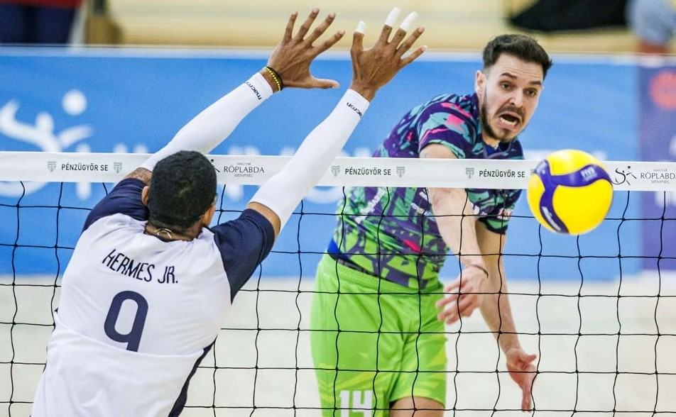
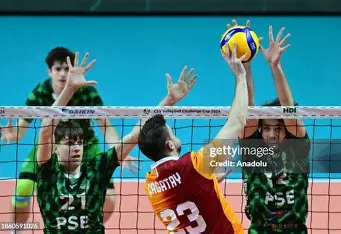
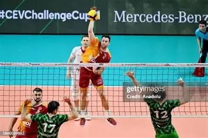

KAPOSVÁR - PÉNZÜGYŐR
A Pénzügyőr SE férfi röplabda csapata a Kaposvár elleni idegenbeli mérkőzéssel folytatta szereplését az Extraligában. A fővárosi együttesnek nem sikerült a pontszerzés, a hazaiak 3-0-ra nyertek.A TippmixPRO NBI Extraliga nyolcadik fordulójában a székesfehérvári székhelyű, MÁV Előre Foxconn vendégeskedett a Pénzügyőr Sportcsarnokban. Bár a találkozó mindhárom szettjét jól kezdte csapatunk, 15 pontot követően ellenfelünk begyújtotta rakétáit, így magabiztosan húzta be a mérkőzést, és utazott haza három ponttal.A TippmixPRO NBI Extraliga nyolcadik fordulójában a székesfehérvári székhelyű, MÁV Előre Foxconn vendégeskedett a Pénzügyőr Sportcsarnokban. Bár a találkozó mindhárom szettjét jól kezdte csapatunk, 15 pontot követően ellenfelünk begyújtotta rakétáit, így magabiztosan húzta be a mérkőzést, és utazott haza három ponttal.a mérkőzést, és utazott haza három ponttal.A TippmixPRO NBI Extraliga nyolcadik fordulójában a székesfehérvári székhelyű, MÁV Előre Foxconn vendégeskedett a Pénzügyőr Sportcsarnokban. Bár a találkozó mindhárom szettjét jól kezdte csapatunk, 15 pontot követően ellenfelünk begyújtotta rakétáit, így magabiztosan húzta be a mérkőzést, és utazott haza három ponttal
KECSKEMÉT - PÉNZÜGYŐR
A folytatásban Grózer György alakulata vasárnap a Szolnoki RK otthonába utazik. Az újonc először szerepel az Extraligában, jelenleg a tabella tizenegyedik helyén szerepel. A találkozó megemlékezéssel kezdődött, ugyanis három évvel ezelőtt hunyt el a Fino Kaposvár fiatal vendégeskedett a Pénzügyőr Sportcsarnokban. Bár a találkozó mindhárom szettjét jól kezdte csapatunk, 15 pontot követően ellenfelünk begyújtotta rakétáit, így magabiztosan húzta be a mérkőzést, és utazott haza három ponttal.A TippmixPRO NBI Extraliga nyolcadik fordulójában a székesfehérvári székhelyű, MÁV Előre Foxconn vendégeskedett a Pénzügyőr Sportcsarnokban. Bár a találkozó mindhárom szettjét jól kezdte csapatunk, 15 pontot követően ellenfelünk begyújtotta rakétáit, így magabiztosan húzta be a mérkőzést, és utazott haza három ponttal.a mérkőzést, és utazott haza három ponttal.A TippmixPRO NBI Extraliga nyolcadik fordulójában a székesfehérvári székhelyű, MÁV Előre Foxconn vendégeskedett a Pénzügyőr Sportcsarnokban. Bár a találkozó mindhárom szettjét jól kezdte csapatunk, 15 pontot követően ellenfelünk begyújtotta rakétáit, így magabiztosan húzta be a mérkőzést, és utazott haza három ponttaljátékosa, Iván Gergő.
NYÍREGYHÁZA - PÉNZÜGYŐR
Vezetőedzőnk, Grózer György nyilatkozata: „Az első szettben sajnos saját magunkat vertük meg. Ilyen sok hibával nem tudunk egy ilyen erős csapat ellen még szettet sem nyerni. Remélem ezeket a hibákat a csütörtöki mérkőzésre ki tudjuk küszöbölni és egy jobb mérkőzést játszani a taval vendégeskedett a Pénzügyőr Sportcsarnokban. Bár a találkozó mindhárom szettjét jól kezdte csapatunk, 15 pontot követően ellenfelünk begyújtotta rakétáit, így magabiztosan húzta be a mérkőzést, és utazott haza három ponttal.A TippmixPRO NBI Extraliga nyolcadik fordulójában a székesfehérvári székhelyű, MÁV Előre Foxconn vendégeskedett a Pénzügyőr Sportcsarnokban. Bár a találkozó mindhárom szettjét jól kezdte csapatunk, 15 pontot követően ellenfelünk begyújtotta rakétáit, így magabiztosan húzta be a mérkőzést, és utazott haza három ponttal.a mérkőzést, és utazott haza három ponttal.A TippmixPRO NBI Extraliga nyolcadik fordulójában a székesfehérvári székhelyű, MÁV Előre Foxconn vendégeskedett a Pénzügyőr Sportcsarnokban. Bár a találkozó mindhárom szettjét jól kezdte csapatunk, 15 pontot követően ellenfelünk begyújtotta rakétáit, így magabiztosan húzta be a mérkőzést, és utazott haza három ponttalyi bajnok ellen.”